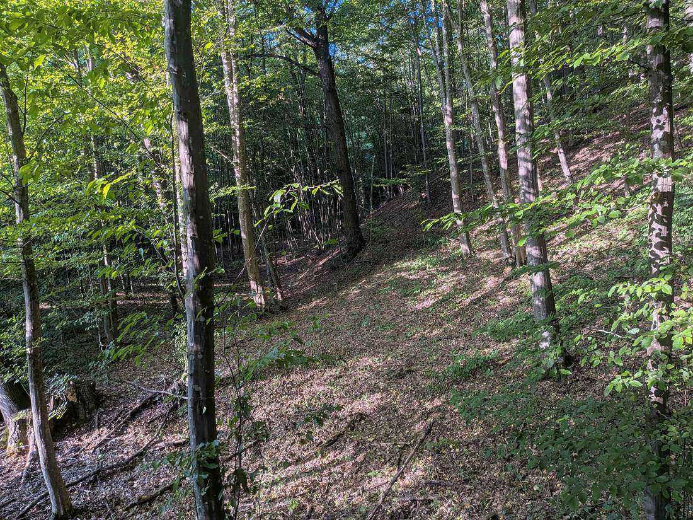
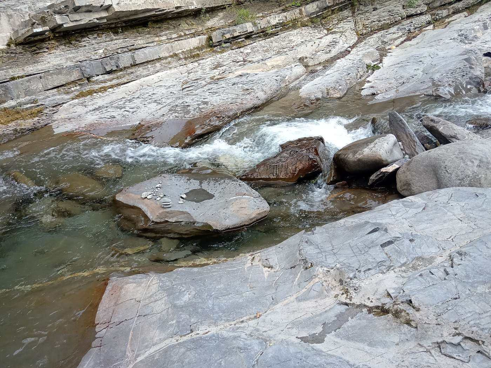

2 縁 + 4 掛け爪
店のこと
「2 縁」と「4 掛け爪」の受け持ちです。お店についてわかっていることは、まだ少しだけ。詳しい紹介文は、お店からお話をうかがってから書き起こします。


2 縁(ふち)
縁は、輪郭を決めるところ
網のまわりをぐるりと囲む縁は、茶こし全体のかたちを決めます。お店の紹介も同じで、まずは輪郭から。店名は「ちょうじゃ屋」、業種はカフェ、所在地は〒441-1423 愛知県新城市作手高里大平2−１。いまわかっているのはここまでです。



4 掛け爪(かけづめ)
掛け爪は、引っかけるところ
掛け爪は、カップの縁にそっと掛けて、茶こしを安定させる小さな突起です。このページでは、お店の考え方や歩みをうかがえたら、ここに「引っかかる」一文として添えます。いまは準備中です。
| 店のこだわり | 準備中 |
|---|---|
| お店の歩み | 準備中 |
| スタッフ紹介 | 準備中 |